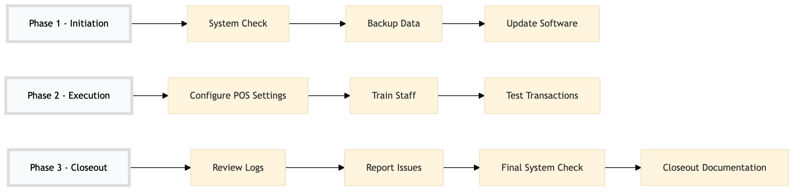

| Role | Steps |
|---|---|
| IT Manager | 1.1 1.2 1.3 3.1 3.2 3.3 3.4 |
| Revenue Manager | 2.1 2.3 |
| Front Desk Agent | 2.2 |
| Step | Name | Role | System | Input | Output | KPI | Dec? | Exc? | Pain Point / Risk |
|---|---|---|---|---|---|---|---|---|---|
| 1.1 | System Check | IT Manager | Oracle OPERA Cloud | None | System status report | Less than 5 minutes | N | Y | Hardware failures or connectivity issues |
| 1.2 | Backup Data | IT Manager | Oracle OPERA Cloud | Current database state | Data backup file | Less than 30 minutes | N | Y | Insufficient storage space or failed backups |
| 1.3 | Update Software | IT Manager | Oracle OPERA Cloud | Software update package | Updated software version | Less than 2 hours | N | Y | Compatibility issues with existing systems |
| 2.1 | Configure POS Settings | Revenue Manager | Oracle OPERA Cloud | Configuration parameters | Configured POS settings | Less than 30 minutes | N | Y | Incorrect configuration leading to operational errors |
| 2.2 | Train Staff | Front Desk Agent, Revenue Manager | Oracle OPERA Cloud | Training materials | Trained staff | Less than 1 hour per person | N | Y | Lack of understanding or training resistance |
| 2.3 | Test Transactions | Revenue Manager, IT Manager | Oracle OPERA Cloud | Sample transactions | Transaction test results | Less than 1 hour | Y | Y | System bugs or integration issues |
| 3.1 | Review Logs | IT Manager | Oracle OPERA Cloud | System logs | Log review report | Less than 2 hours | N | Y | Overlooked error messages causing system failures |
| 3.2 | Report Issues | IT Manager | Oracle OPERA Cloud | Log review report | Issue resolution plan | Less than 1 day | Y | N | Delayed issue resolution impacting operations |
| 3.3 | Final System Check | IT Manager | Oracle OPERA Cloud | None | System readiness confirmation | Less than 5 minutes | N | Y | Last-minute system failures or errors |
| 3.4 | Closeout Documentation | IT Manager | Oracle OPERA Cloud | System readiness confirmation | POS System Management report | Less than 1 hour | N | Y | Incomplete or inaccurate documentation |
This process outlines the management of Point of Sale (POS) systems in a full-service Marriott hotel using Oracle OPERA Cloud PMS. It ensures smooth transaction processing and maintains system integrity.